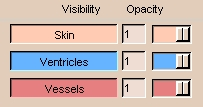
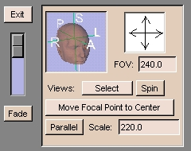
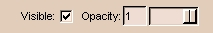
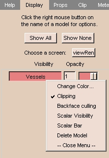
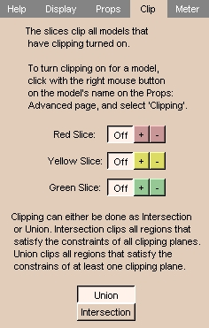
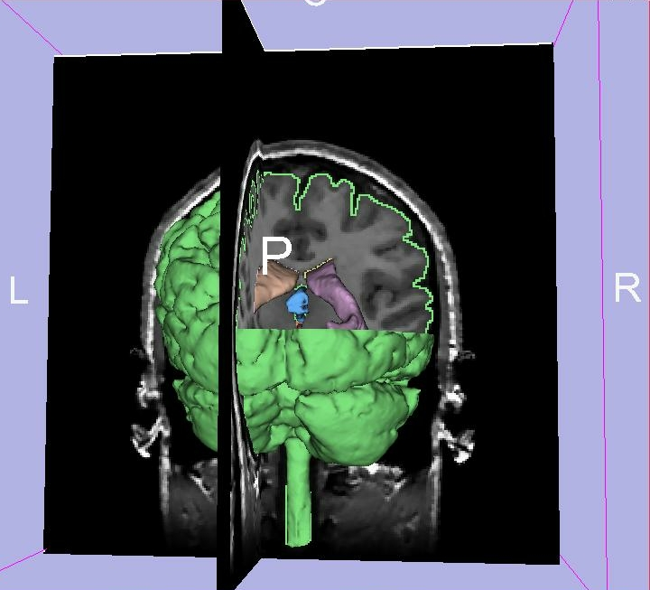

You can view models (3D surfaces) in Slicer.
Selecting Models
The Display tab of the Models panel controls which models
are visible in Slicer.

- Clicking the name of a model in the list turns its visibility on and
off.
- Right-clicking the name of a model in the list displays a menu of display
options for that model.
- Click Show All to display all models in the 3D Viewer.
- Click Show None to display none of the models in the 3D Viewer.
Controlling the 3D View
There are several options for controlling the 3D view with the mouse:
- Left-click the view and move the mouse to rotate the view.
- Click the middle button (or Alt-Left button) on the view and move the mouse to move the view left, right, up, or down.
- Right-click the view and move the mouse to change the zooming factor, making the view larger or smaller.
Controlling the Scene with the User Interface Panel
| Move the cursor over the Slicer icon: |
|
| The user interface panel appears: |

|
The controls on the user interface panel include:
- The Image Fusion slider on the left between Fade and Exit is useful
when you have data in the foreground and background.
When the slider is at the top, it will display only the foreground dataset;
when it is at the bottom, it will display only the background dataset.
When the slider is in between, it will blend the two data sets.
This is particularly useful when you are registering two data sets, and want to see how accurate the registration is.

- The head icon snaps the 3D view to align with the selected major axis.
Click R (Right), L (Left), P (Posterior), A (Anterior), I (Inferior), or S (Superior) to snap the image to each direction.
- The arrows pointing up, down, left, and right rotate the 3D view incrementally in the selected direction. Click the arrow and the 3D view will rotate.
- FOV stands for Field Of View, which determines how much of the image to display.
If the image is too small, enter a larger value for FOV. If the image is too large, enter a smaller value for FOV.
- Parallel toggles between a parallel projection
(which preserves parallel lines, and displays an object the same size
regardless of how far from the observer)
and a perspective projection (which displays closer objects as larger than farther objects).
Opacity
Opacity is how non-transparent a model is. (The higher the opacity, the less transparent the model is.)
You can control the Opacity of each model.
By default, Slicer creates models that are completely opaque (opacity = 1).
Setting the opacity to 0 makes the model completely transparent.
Adjust the opacity in either of two ways:
On the Display tab of the Models panel, adjust the Opacity slider
next to the model's name in the model list.
On the Props tab of the Models panel, set the Active Model,
and use the Opacity slider below.

Color
You can select colors for models.
Click Color (on the Props tab of the Models panel) to select a color.
Enter a description of what that color will represent.
Clipping
Clipping is cutting away sections of a model at one or more selected slices.
On one side of each selected slice, the model is removed,
revealing the image of each selected slice
and the rest of the visible model.
To turn clipping on:
- On the Display tab of the Models panel,
right-click the model's name in the list.

- A drop-down menu appears. Select Clipping.
To control clipping:
- Select the Clip tab of the Models panel.

- Select which side of a slice to clip the model on, as follows:
| Color |
Slice |
+ means: |
- means: |
| red |
Axial slices |
Superior |
Inferior |
| yellow |
Sagittal slices |
Right |
Left |
| green |
Coronal slices |
Posterior |
Anterior |
Click + or - to select which side of each slice to clip on.
In the sample below, the right-superior-posterior part of the cortical
surface has been clipped.
